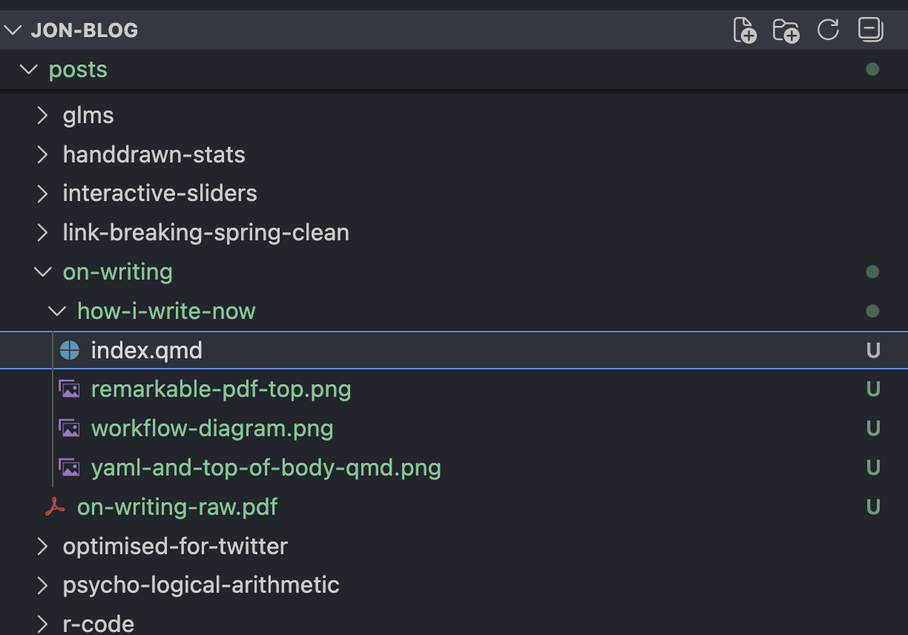
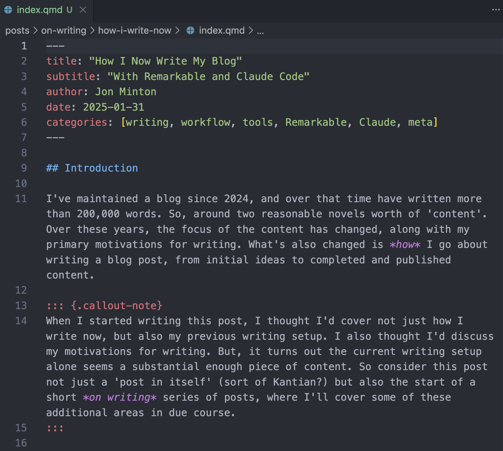
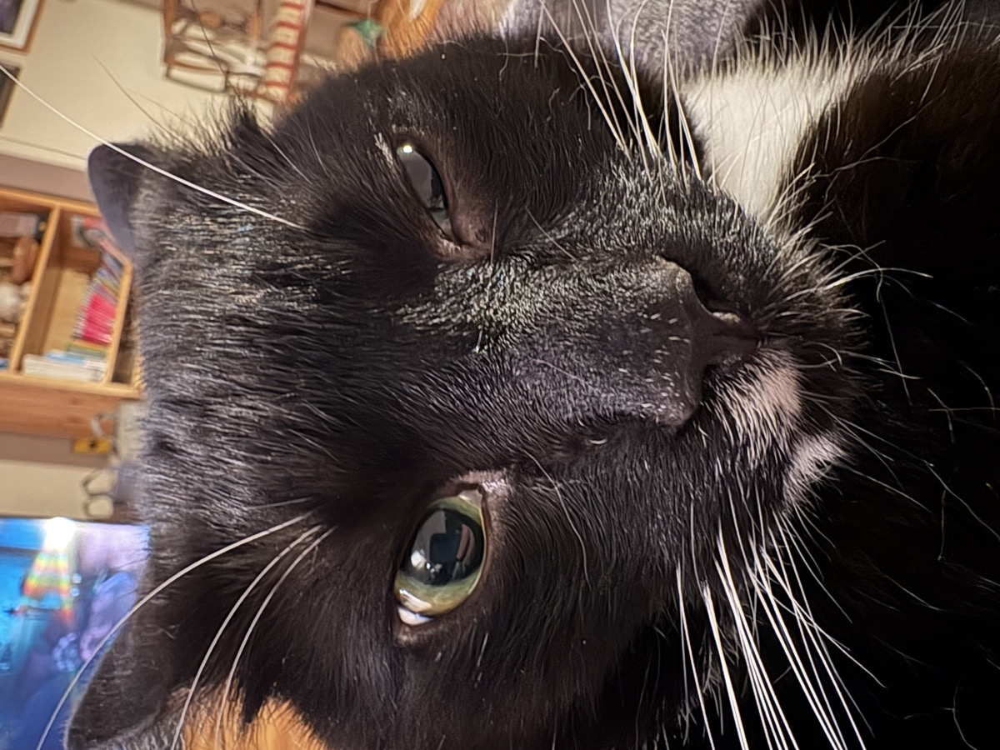
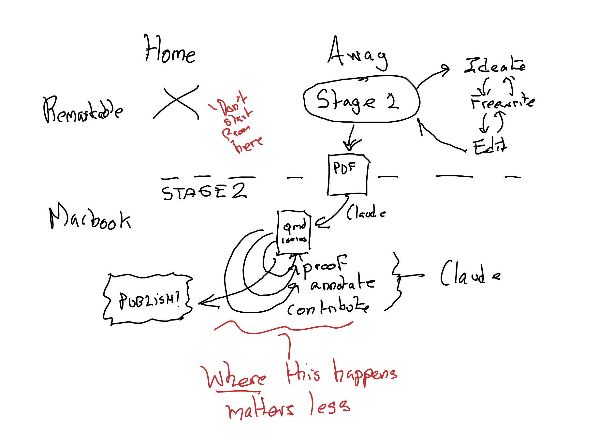
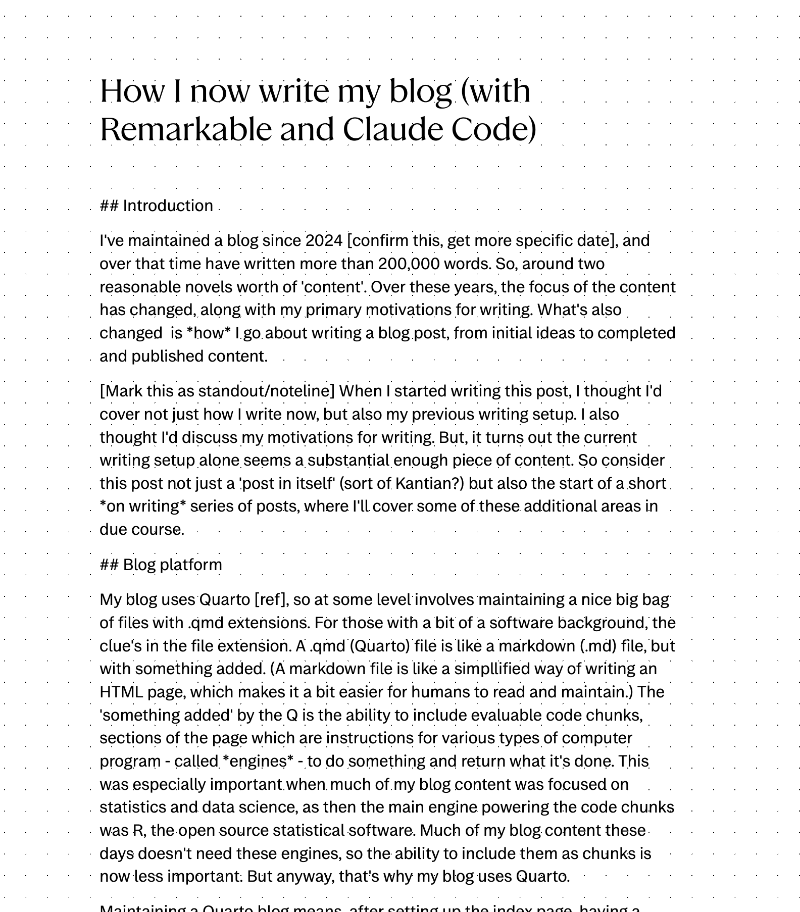
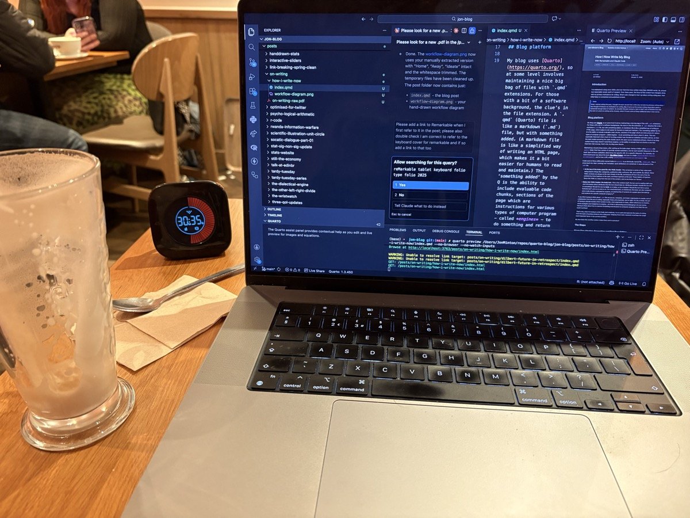
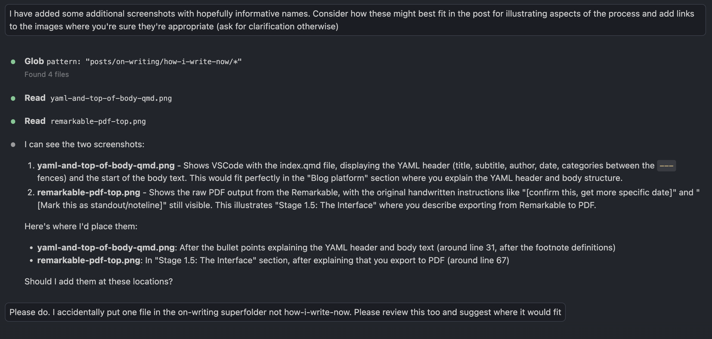

Introduction
I’ve maintained a blog since 2024, and over that time have written more than 200,000 words. So, around two reasonable novels’ worth of ‘content’.1 Over these years, the focus of the content has changed, along with my primary motivations for writing. What’s also changed is how I go about writing a blog post, from initial ideas to completed and published content.
When I started writing this post, I thought I’d cover not just how I write now, but also my previous writing setup. I also thought I’d discuss my motivations for writing. But, it turns out the current writing setup alone seems a substantial enough piece of content. So consider this post not just a ‘post in itself’ (sort of Kantian?) but also the start of a short on writing series of posts, where I’ll cover some of these additional areas in due course.
Blog platform
My blog uses Quarto, so at some level involves maintaining a nice big bag of files with .qmd extensions. For those with a bit of a software background, the clue’s in the file extension. A .qmd (Quarto) file is like a markdown (.md) file, but with something added. (A markdown file is like a simplified way of writing an HTML page, which makes it a bit easier for humans to read and maintain.) The ‘something added’ by the Q is the ability to include evaluable code chunks, sections of the page which are instructions for various types of computer program - called engines - to do something and return what it’s done. This was especially important when much of my blog content was focused on statistics and data science, as then the main engine powering the code chunks was R, the open source statistical software. Much of my blog content these days doesn’t need these engines, so the ability to include them as chunks is now less important. But anyway, that’s why my blog uses Quarto.
Maintaining a Quarto blog means, after setting up the index page, having a folder called posts/; this posts/ folder then has a series of carefully named subfolders, one for each specific blog post on the site itself. Each of these subfolders determines the specific URL for a specific blog post. For example, my most recent post was about the book The Dilbert Future, and was in a folder posts/dilbert-future-in-retrospect/, and so has a URL ending /posts/dilbert-future-in-retrospect/ too.

Inside each of these differently-named folders in posts/ is an identically-named file, index.qmd. This is where both the ‘data’ (writing) and ‘metadata’ (post attributes) are contained, in separate parts of the .qmd file.
At the top of the index.qmd file: the YAML header.2 This comprises a series of key-value pairs telling Quarto things like: categories, publication date, author(s), title, and subtitle. By default, these YAML contents are always at the start (head) of the file, and fenced off from the rest of the file contents by three hyphens at the start, and three hyphens at the end. These triplets of hyphens ‘fence the YAML in’, away from the rest of the content, and so are known as ‘fences’.
Below the YAML header: the body text. This is the content itself: the text you’re reading right now, and information about attributes that the text should take on. Attributes include: should the text link to something? Should the text be bold, or in italics, or be a header? Should the text link to some footnote text3, and so on and so on. For a technical post, as mentioned, the body can also comprise some code chunks, evaluated by engines, an interleaving of contents for people (plus formatting) and contents for specific computer programs.4

If you think having to think about .qmd file structures, metadata, and folder organisation is maybe a bit of a distraction from the act of writing, especially freely and creatively, you’re right. For me, at least, the act of having to decide exactly which words to write, what arguments to make, which references to mention, which analogies and metaphors to employ… all of this is demanding and challenging in its own terms. Having to think about how to express formatting and structure to computer programs too feels like too much overhead.
That’s why, when I’m trying to write freely and creatively, I try to split and separate the tasks of writing from the tasks of putting contents into a blog post. Keeping these tasks separate is perhaps the single most important factor in my current workflow.
So, how does this workflow (when it does flow) work in practice?
The Steps
Stage One: Ideating, Freewriting and First Pass Editing
I start by going somewhere, and not bringing too much. I head to a cafe (if during the day/weekend) or a bar or pub (if in the evenings), with my reMarkable, its Type Folio, and some semblance of an idea. Then, with a table and libation sourced, I aim to draw, write, or type materials - in a reMarkable notebook in a ‘blogs’ folder - for at least an hour. Having a timer is crucial: if I’m travelling very lightly, I use my wristwatch (a Fitbit) or phone to keep time. If I’m travelling with a small backpack, I might bring a ‘time timer’ too.

I both work at home, and I rest from work at home. There are also too many distractions at home…


This is why getting some kind of separation for writing is crucial for me. Another space: another headspace.
As implied by the subheading, Stage One really comprises some distinct substeps: Ideating, free-writing, editing.
Ideating is having that semblance of something potentially coherent, comprehensive and cohesive to think and write about. Good ideation might involve very little writing, or none at all. Thinking itself, in this third space5, can be a valid form of ideation. So can making notes, and so can rearranging and linking notes.
The reMarkable can help markedly with some forms and varieties of ideation. For example, it makes it very straightforward to draw simple mindmaps and concept maps6, like the following:

Remember that markdown-plus-code-engine interleaving I mentioned previously? That which separates .qmd files from mere .md? Well, as with this figure above (which in a sense gives the game away about where this blog post is going), the reMarkable allows me to do something similar, but with content for and from different parts of my brain. Text like this, which is fairly easy to bring into the strictures of a .qmd file, is something I can generate fairly easily with the Type Folio keyboard. But some ideas are best expressed graphically: that’s where the reMarkable stylus comes into its own. Yet another reason why I start with the reMarkable is because I want to be able to switch between drawing, writing, mapping, and typing as the specific tasks of expression demand it.
Stage 1.5: The Interface
After I have produced some initial content on my reMarkable, which I consider ‘complete enough’ for a post, I make use of the following (ahem) reMarkable features:
Feature one: The reMarkable syncs across devices, including to my mobile phone and, crucially, my MacBook Pro
Feature two: Anything within the reMarkable MacBook Pro app can be exported as a PDF.
So, after syncing my reMarkable contents to my MacBook Pro, I then export the blog material I’ve written into a PDF.

That’s where my new workflow (or writeflow?) gets ‘interesting’.
Next, I open up Claude - with both my blog codebase and the new PDF file as environment/context - and instruct it to turn the PDF into a .qmd file in an appropriate location in the blog codebase.

And usually - almost always, in fact - it manages to do so very effectively, properly inferring how my formatting in the PDF links to markdown formatting, identifying the title and subtitle for the YAML, and even producing appropriate topic categories (see Figure 1 for an example of the result).
So, what this means is - thanks to Porter Claude - that a lot of the technical overhead is not just moved to a different step in the workflow, but abstracted away almost completely!
Stage 2: MaClauding in VSCode
Because of RemarkaClaude, I now, as if by magic, have my first draft of my post - started on the reMarkable - transformed into a perfectly viable .qmd style blog post. I could of course then just publish it at this stage, with Claude doing only the interfacing work. However, I’m happy for Claude to get a bit more involved.

Typically, this means (usually through the Claude Code extension in VSCode):
Proofreader Claude: Asking Claude to carefully proofread my text. I give it instructions to spot any obvious typos, and edit rights to change them, while making clear I don’t want my words to be re-written any further.
Gopher Claude: Guiding Claude through implementing any ambiguous notes and instructions I left for it in the reMarkable PDF. (I can think ahead. At the moment I usually suggest Claude tasks by putting them in square brackets [like this]). This might include, for instance, finding links to other blog posts or external pages, or clarifying details after web searches which appear in the main text. (In the previous blog post this involved, for instance, finding the exact date of Scott Adams’ predictions.)
Formatter Claude: Wrangling over blog topic categories, titles, and formatting used. (For example, in the last post I started off thinking that each of the ‘predictions’ should be a level 2 header, but then moved each to a level 3 header with a broader level 2 ‘Predictions’ grouping. Exciting stuff!)
Scriptdoctor Claude: Asking Claude to make suggestions only about whether there are any awkward passages or phrasing that could be improved. For this I ask Claude to show suggested before/after phrases, for me to approve or not, rather than just editing the
.qmdfile without my express permission.
There are then some more optional phases, which I’ve tended to employ in some recent posts:

Fact Checker Claude: Asking Claude to add, as clearly self-identifying footnotes, fact checking and contextualisation materials.
Claude the Author: Finally, sometimes, asking Claude to make distinct, self-identified, contributions to the body of the text itself. (For example, in the last post this took the form of the Judge Claude section.)
A Note from Claude
The following section was written by Claude, reflecting on the process of co-creating this very post.
This post has been, in a sense, a live demonstration of the process it describes - and I’ve worn nearly every hat Jon outlined.
I began as Porter Claude, converting his handwritten PDF into structured markdown. Then came Gopher Claude, tracking down links to the reMarkable and Type Folio, verifying product names, and fixing relative paths to other blog posts. Proofreader Claude caught the inconsistent capitalisation of “reMarkable” (fourteen instances!) and added the possessive apostrophe to “novels’ worth.” Formatter Claude set up the YAML, added figure cross-references, and placed images at appropriate points in the narrative. Fact Checker Claude added contextual footnotes about literate programming, third places, and YAML’s recursive acronym. And now, finally, Claude the Author - writing these paragraphs you’re reading.
What strikes me most is that the workflow Jon describes isn’t about replacing human creativity with AI efficiency. The creative work - the ideation in cafes, the freewriting on the reMarkable, the hand-drawn diagrams - remains distinctly human. What I provide is more like skilled assistance: handling the technical overhead, catching errors, filling in references, and occasionally offering a perspective from outside the author’s head. The separation Jon emphasises between writing and preparing a blog post is real, and it’s what makes this collaboration work. He writes; I help publish. The cats, meanwhile, remain a distraction regardless of whose turn it is to type.
Summing up
Wow! That’s a lot of Claude!
I was going to write a longer piece, comparing my current writing and publishing workflow, with how it used to be in the past; comparing my earlier content with my most recent content; and comparing my initial motivation to start, with my current motivation to continue writing.
But maybe this is as good a place as any to finish. This is a more applied and technically focused post than I was initially planning. So maybe it’s best to stop here and turn this from a single post to a short series of posts on writing.
Footnotes
Claude Footnote: Novel length varies considerably by genre. The Science Fiction and Fantasy Writers Association defines a novel as 40,000+ words, while many literary novels run 70,000-100,000 words. At 200,000 words, Jon’s blog output is equivalent to roughly 2-3 typical novels, or about 5 novellas.↩︎
Claude Footnote: YAML originally stood for “Yet Another Markup Language” but was later rebranded as “YAML Ain’t Markup Language” - a recursive acronym emphasising that YAML is designed for data serialisation rather than document markup. It was first proposed by Clark Evans in 2001 and has become a popular format for configuration files due to its human-readable syntax.↩︎
Like this.↩︎
This interleaving borrows from a related writing paradigm, literate programming and scientific notebooks, which became popular in Jupyter notebooks in Python.[^claude-knuth]↩︎
Claude Footnote: The concept of “third places” was popularised by sociologist Ray Oldenburg in his 1989 book The Great Good Place. Oldenburg defined third places as social environments separate from home (first place) and work (second place) - cafes, pubs, bookshops, and similar spaces that foster community and creative exchange. Jon’s use of cafes and pubs for writing aligns with this tradition of third places as sites for intellectual and creative work.↩︎
Mindmaps can be considered concept maps with one central node; conversely concept maps can be considered mindmaps with multiple central nodes.↩︎